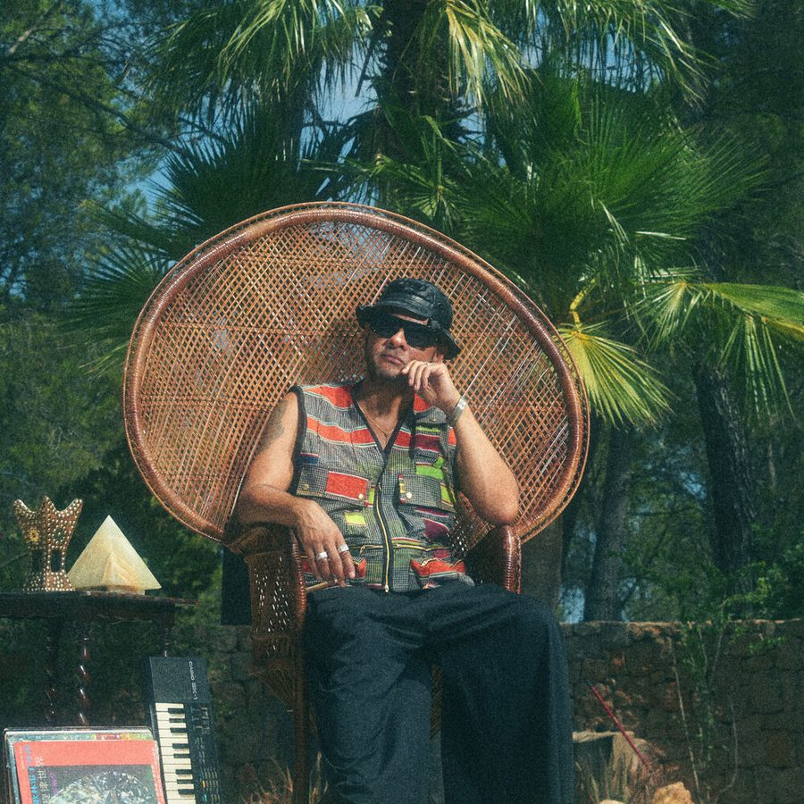

Nightmares on Wax: 25 years and the journey continues


Nightmares on Wax: 25 years and the journey continues
‘N.O.W IS THE TIME’ is the retrospective compilation that marks the 25th seminal year of releasing music for Leeds stalwart George Evelyn AKA Nightmares on Wax. Growing up around the hip-hop of the 80s, he went on to merge this background (plus an earthy mix of funk, soul and dub) with the electrifying club culture that was exploding out of the UK at the time. ‘Trip hop’ was the term that was oft assigned to describe seductively laidback vibes of his music, though it’s one that could never do justice to the breadth of Evelyn’s career.
In 1989 he was one of the first artists to release a record on the seminal Warp label, and Nightmares on Wax has functioned as both a band and a solo venture over the years, as well as Evelyn being equally renown as a DJ under the DJ E.A.S.E. moniker. While his earlier efforts saw him focusing his energies in the clubs, it was the hip hop chillout masterclass that was Smokers Delight in 1995 that truly locked his legacy in stone.
“It’s a really, really special time right now.” Chatting to Data Transmission to mark the release of ‘N.O.W IS THE TIME’, Evelyn is in retrospective mode, and says it’s been a great opportunity to look back over the remarkable amount that he’s achieved in his career. And he also has some equally remarkable observations about what it means to be an artist, and reflections on the creative process that are deep enough in themselves to warrant a spliff and beanbag session, and a contemplative trawl back over his impressive back catalogue of music.
“The story continues,” he told Data Transmission. “I’m looking forward to just connecting, and really spreading this good energy of what we’re about”.
We began the interview by talking about his Wax Da Jam residency that returns to Ibiza later this month for its fifth season, as well as its second year at the island’s oldest club Las Dalias. George also provided us with some exclusive photos from his archives in an interview we were got to take an in depth look at a fascinating career.
Ibiza seems like a place that has always been a natural fit for you, considering there’s always been a touch of the Balearic in your work.
When Wax Da Jam started originally, I had this concept of wanting to DJ as well as jam with musicians, and to really let the crowd be part of things. And the first time we did that, we did one event in Dublin, we did one in Berlin, we did one in Leeds. I’d already started Wax the Beach when I’d been living in Ibiza, and then when I got the opportunity to do an event at a restaurant on the island, that’s what really gave it a real platform, because it was a weekly event that allowed us to do 17 weekly parties over the summer. We weren’t allowed to advertise the parties, because it was in a restaurant and we didn’t have a license to do what we were doing, so we just did it through word of mouth. It was free, and it was really just about the people, which it still is now. So that’s how it was built, and that’s how it’s become what it has become. This season is probably the first where we’ve really had the opportunity to integrate some production into what we’re showcasing.
What have you witnessed in Ibiza in terms of the changes over the past few years?
When I first moved here, even though I’d already been coming here for 20 years, when I was actually here for a concentrated amount of time, I couldn’t believe what wasn’t actually here. Musically, and vibe wise. There’s some great clubs here, and some great nights here, but to me there was just so much room to do what I was doing. And I didn’t need to change what I was doing, but it did inspire me to expand upon things. I was really one of the first people to really start bringing the live element back into it. Later obviously Ibiza Rocks was doing their thing and starting to bring bands over. And that whole live thing has really, really developed over here now. There’s definitely more of that happening.
Otherwise, there are constant changes, and there are things that I’m not really into. I’m not really a fan of the whole VIP thing and that kind of stuff, I just feel it segregates people, and puts people in a separate position to everybody else. That’s not really a part of what a party should be about to me. Parties are about everybody being a part of it. I understand why people do it, it creates revenue and allows people to pay for things that they wouldn’t normally be able to pay for. However, when that becomes more important than what their actual content is...
Perhaps the trend towards VIP makes your residency a little more special?
Where I’m coming from is, what about people? Let’s do a party for the people, let’s remember why we all go out, and why we all love music. It’s because music brings people together, it’s about fun; those are the basic elements of what we’re doing. It’s nothing to do with fashion or trends or scenes, it’s just those very basic elements, and once people are among those elements and they’re experiencing that at our parties, they’re like “oh right we get it now, this is what I want.” It’s about creating that collective energy.
You sound quite pleased with the response over the past few years.
Yeah. It’s forever growing, forever progressing. It doesn't feel like it’s tiring. There’s so much that I want to do, and it’s nice to do it in a way that’s more organic.
We’re on the phone today to chat about your ‘N.O.W Is The Time’ compilation. What were the main elements that inspired it?
It’s my 25th year of releasing music, of releasing ‘signed’ music, let’s put it that way. The act really is 30 years old, but the fact that we signed our first record deal in 1989 really marks that milestone of 25 years. It was 25 years ago that we began to walk.
How does this make you feel as an artist, to have this legacy behind you?
I feel very honoured, I feel very proud, and I feel reconnected to what I’m doing. Just even spending these last six months really focussing on this whole project, it’s been very emotional. It’s reconnected me with a lot of people who’ve been involved in my journey, by going back and reminiscing. Because when you’re starting out, you’re always moving forward with things at a rapid pace… you don’t really take the time to stop and take in what you’re doing. And that’s understandable when you constantly want to be on top of the newest, freshest thing, which is what I was like back in the day. To me now, it’s more about really being present with what you’re doing. Even if I’m making new stuff, it’s about being aware and conscious of what you’re doing. I’m not saying there’s anything wrong with not being like that when you’re starting out, because you’re just this big ball of fire that just wants to keep on roaring forward. But to now be going back over the music I’ve created in the past, and all those experiences I’ve had, I’m like ‘wow’… Now I’m really recognising what I’ve done. It’s a very, very special time right now.
Continued on page 2
I’d assumed the process would be fairly straightforward for such a release, but it sounds like it was a little more elaborate for N.O.W.?
Any Nightmares on Wax fan will know that there’s a journey. The same kind of journeys that can be seen within the individual albums themselves; and there has been a lot of people who have been there on that journey with us. So to now try and go back and express what that journey is, there’s a lot of realisations that come from that. And also all of the buzz and the heat we’re getting from the American side of things, it’s feeling like the beginning again. So you can get a quick fix of knowing what that journey is, through this compilation, without actually having lived the full 25 years of it, if you’re just discovering Nightmares on Wax. But even if you have been with us for the entire 25 years, it kind of brings it all together. There’s so many stories involved in there, and certain things are just being revealed to me now, when I speak to certain people; they go, “remember this, remember that.” It’s kind of never ending. It’s a celebration.
I was interested in how you laid out the tracks; you talk about it being a journey, but it’s not a chronological one in terms of starting at the beginning of your career.
As much as you’re sentimental about things and connected to it, you’ve also got to think that if there is someone listening to this for the first time, how does it connect with them? It’s all about the flow and the energy of the whole thing, so that’s where I’m basing things. We could have done a timeline, but the first consideration is just to listen to it, as if you’re hearing it for the first time. Is it coherent all the way through? So that’s how it was put together.
It’s a good way to showcase the different styles that you’ve taken in over the years, and how you’ve evolved. It’s been ever changing.
If you go right back, we were doing hip-house tracks back then, and tracks that people called drum n’ bass or techno; terms we didn’t even have in our vocabulary back then. I listen to some of the arrangements of some of those songs, and I don’t even think I could arrange something like that now. I recognise the naivety, the freedom and the abstract way of producing that you have in your early career. There’s something to be said for gaining knowledge and being observant, but also for being completely naïve and producing a record on that level. If you’re completely naive about what you’re dong and you just want to make music, you look back on things that are quite genius really. You could be heavily endowed with wisdom, quite articulate, and the production quite tight and very together … there’s something to be said about both, I think it’s easy to recognise that. But the way that I experience and make music now, it just seems a million miles away from the production elements of some of those tracks.
‘Smokers Delight’ is one of the albums that keeps coming up again and again.
‘Smoker’s Delight’ changed my life. It has to be up there. Even though we made these big house tracks at the beginning that did amazingly well, that was the album that really changed my life. The thing about the album, it was made over 5 years, and it was inspired by hanging out with friends and being in really bizarre scenarios, whether that be tripping in the countryside and listening to my sample tapes, or listening to the tapes at an afterhours following a rave, or listening to them in a Chalet after the Southport Weekender. There are so many different connections to the tracks on that album, and I made that album over 5 years. And then it got released to the world, and everybody else lived that experience too.
And the funny thing is it’s probably the crudest thing I’ve come up with. It was a night at my friend’s place, and we’d been listening to Tangerine Dream and the KLF chillout album. And I said you know what, I’m going to make my own hip-hop chillout album, and I’m gonna call it ‘Smoker’s Delight’. And then I did it. It fascinates me that it just came to me in that fashion. To this day I’m still touring it, and the stories that I get from people still about their own experiences with it… They crossed South America listening to it, or the kids coming to concerts now who say they discovered my music when they were seven years old… Crazy shit. When something you create resonates with you personally, and then you put it out and it starts to resonate with other people on such a deep level… You ask yourself, do you really know what you’re doing here? You don’t, because you’re just energetically working off something that you’re vibing with, but you couldn’t have known what the ripple effects of that would be.
There wasn’t any overthinking taking place at all?
Even when I talk about it now, about the story and going into everything, when I try to think about what was I aiming for back in the day, what was it? It was just about making music. Success to me was having a song played in a club, and that was it. The ultimate thing was that your track would get dropped in a club. Even though I was a DJ myself, the notion of another DJ dropping your record was considered the ultimate respect. It was never about chart position, and it was never about sales. That was the purest form, and that’s what was so important to me and my crew. So to think that it’s gone so far beyond that, and I’m sitting here even now talking to you about it, it’s like ‘wow’. You know what, there’s something else going on here, and you’ve just gotta go along for the ride.
And these things put you in check a little bit, about what you’re doing, and it makes you really recognise the craft. As a musician, often you are very hard on yourself. Constantly beating yourself down, constantly wanting shit to be better. Having anxiety about stuff… that’s not what the music is about, at all. It’s taken me all these years to understand that; not just in terms of the music I make, but in my attitude, my approach and my awareness in what I’m doing, I have so much freedom now. I’ve been dying to get in the studio for months, but because I’ve been doing other things, touring and all this preparation going on, I haven’t had the chance to do that. But I know that it’s coming. Now I don’t beat myself up about it, like I would have back in the day. I’d be thinking, “I’ve got a studio, people would die to have that studio, I’m not even using it,” and so forth. It’s all this lack of self worth, it’s all about ego really. You have the side of it where you’re having your ego rubbed by getting all the accolades, and then you’re beating yourself up about not doing enough. So you’re basically nullifying and blocking everything that is creative about yourself. And then every now and then you’ll get a little window, and you’ll be super creative and make a gem. But it’s hot and cold.
Now though, I’ve learned to allow things to come to me. I don’t need to chase anything, whether that is making music, getting gigs, I don’t need to do any of that stuff. I have to ‘trust’. When I first started recording music, and when I couldn’t get a record deal, and when I borrowed money and pressed up my record myself, there was trust there, even though I wasn’t aware of it. What made me think I could hire a car, and drive to a record store in London and sell my pressing? But I did it. I never stopped once to ask, “maybe this is not gonna work”. But over the time as you become more observant about what you’re doing, and you start to judge yourself. And you start to consider what the outside world thinks as well, and that’s dangerous territory.
It’s the self deprecation that often goes along with the creative process.
My favourite quote, and one that I stand by now, is that “if you don’t go within, you go without”. That’s it. Everything exists within you. It’s not out there. Out there will give you all the praise, and out there will ruin you as well. But that’s not where you should measure yourself; you have to measure yourself within yourself. And that’s not an ego thing, that’s about connecting with your being, connecting with what you are channelling, connecting with what you are doing. And if you’re comfortable with it, it’s right. It really is. It’s only when you start to overanalyse everything, that’s when all the doubts and fears come in.
I’m not gonna sit here and say that I’ve known that all along, as I haven’t known that all along. Know what I’m saying? These are the things that I’ve had to unravel through all my experiences, but I also recognise that back in the day when I was naïve and innocent, that I had this knowledge even though I wasn’t conscious of it. So tying in with the celebration thing is the notion of going full circle; you go off on this journey, and then you go off the beaten track, and you wonder down this path and path… Along the way you pick up different things; some things fit, some don’t, and some really bring you back down, all that kind of stuff. And then you come back around to reflect it. And you say to yourself, you know what, I’m just gonna do me. And that’s been so great about being about to reflect on the whole 25 year milestone thing,
There’s a track on there called ‘Mind Eye’, which is from the ‘Mind Elevation’ album. When I chose the song to be on the new retrospective, it was like I was listening to it for the first time. It made me wonder where my head was at the time… And then I looked back at that period of time in my life, and I wasn’t in a really good place. It was the first time when I’d had quite a lot of money, I’d moved into a new house, I’d become a father and I was touring everywhere. And I was so disconnected from everything that I was doing, because everything was alien to me. All of a sudden I didn’t have any of the things that I’d been brought up around. I didn’t have the struggles, which sounds great, but I wasn’t connected to any of these new experiences because I felt guilty, that I wasn’t worthy, and all this ghetto mentality stuff that I had been brought up around, things that had conditioned me, and removed me from everything that I had desired.
And that eventually came back to me when I was putting this compilation together. I listened to that track, and I actually said to myself, it sounds amazing. I don’t think I’ve ever said that to myself. And that was a revelation in itself; actually saying it, and being comfortable with saying it. That self-appreciation; and it was real, it wasn’t about needing to boost myself up. I was hearing something without having all the emotional connections revolving around my personal experiences while I was making it. This was hearing it purely as a piece of music.
So that’s just one little snippet of what I’ve been going trough while doing this! It’s a big process, and a lot of healing [laughs].
You’re the longest serving artist on Warp Records; it’s one of electronic music’s most prestigious labels in electronic music. What is your relationship like with them?
Me and Steve Beckett are really good friends. You’ve got to remember, we were driving around together getting test pressings done, going to different studios, mixing tracks down when there wasn’t really a record label. It’s been a long journey, and it’s been amazing to see Warp grow into this amazing melting pot of creativity. There were times when people were coming up to me and saying, “Warp is a techno label, what are you doing on there, they’re doing this, they’re doing that…” Why should I even be bothered about what other different music is on there? Because at the end of the day, I’ve been there since day one. The people who are in that bubble of thinking, “well you don’t fit into that box…” I don't need to fit into any box. And I just think that it’s amazing that a record label has emerged and grown from that scene that we were part of at the time, into this amazing music label. And to actually make that transition, and be successful with it... It’s very, very inspiring. And Steve inspires me as a person, he’s such a placid soul. The team that they’ve got in there, everyone is there because they love working there, everybody is a fan. It’s a pleasure to feel that I’ve got such a genuine team behind me.
Words: Angus Thomas Patterson